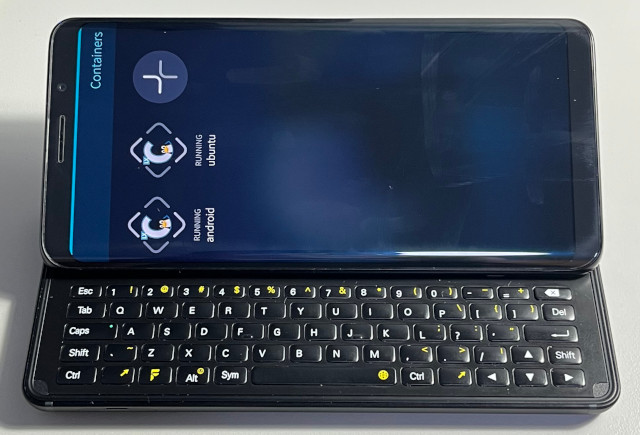

Steward
分享是一種喜悅、更是一種幸福
手機 - F(x)tec Pro1 X - Sailfish OS - LXC - 安裝LXC
參考資料：
https://chumrpm.netlify.app/
https://github.com/sailfish-containers/harbour-containers
https://repo.sailfishos.org/obs/home:/kabouik/sailfish_latest_aarch64/aarch64/
https://github.com/sailfish-containers/lxc-templates-desktop/wiki/Desktop#start-desktop
步驟如下：
$ curl https://repo.sailfishos.org/obs/sailfishos:/chum/4.4.0.72_aarch64//aarch64/sailfishos-chum-gui-0.5.0-1.6.1.jolla.aarch64.rpm --output sailfishos-chum-gui-0.5.0-1.6.1.jolla.aarch64.rpm $ curl https://repo.sailfishos.org/obs/home:/kabouik/sailfish_latest_aarch64/noarch/lxc-templates-desktop-1.4-1.18.1.jolla.noarch.rpm --output lxc-templates-desktop-1.4-1.18.1.jolla.noarch.rpm $ curl https://repo.sailfishos.org/obs/home:/kabouik/sailfish_latest_aarch64/aarch64/qxcompositor-0.0.6+qtwayland.5.6.20220828010818.7e0ec8a-1.25.1.jolla.aarch64.rpm --output qxcompositor-0.0.6+qtwayland.5.6.20220828010818.7e0ec8a-1.25.1.jolla.aarch64.rpm $ curl https://repo.sailfishos.org/obs/home:/kabouik/sailfish_latest_aarch64/aarch64/harbour-containers-0.8+devel.k.20220830103353.1.g0c0da06-1.99.1.jolla.aarch64.rpm --output harbour-containers-0.8+devel.k.20220830103353.1.g0c0da06-1.99.1.jolla.aarch64.rpm $ sudo zypper install sailfishos-chum-gui-0.5.0-1.6.1.jolla.aarch64.rpm $ sudo zypper install lxc-templates-desktop-1.4-1.18.1.jolla.noarch.rpm $ sudo zypper install qxcompositor-0.0.6+qtwayland.5.6.20220828010818.7e0ec8a-1.25.1.jolla.aarch64.rpm $ sudo zypper install harbour-containers-0.8+devel.k.20220830103353.1.g0c0da06-1.99.1.jolla.aarch64.rpm
完成
